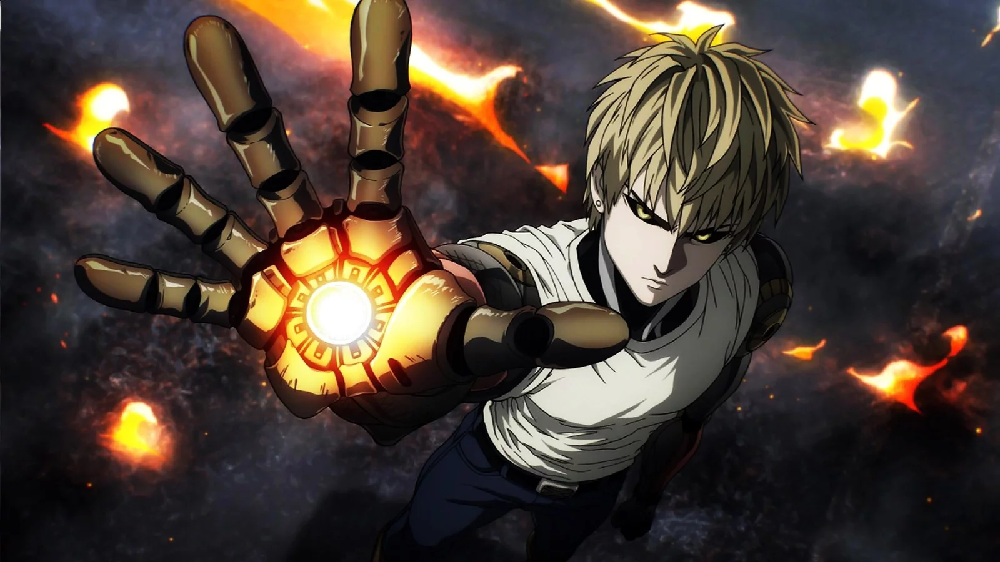

Important Heroes
Saitama
 Our beloved bald hero! Saitama's superhuman abillites have caused him to adopt an extremelt lassez-faire attitude towards life. Most things
generate little to no reaction from him and at times you're wondering if he's even paying attention. The one thing that always catches his eye however is money. Saitama is
actually a bit of cheapskate stopping at nothing to hit supermarket sales and regularly exploiting his disciple for free labor and rent money. His hero name is "Caped Baldy"
Our beloved bald hero! Saitama's superhuman abillites have caused him to adopt an extremelt lassez-faire attitude towards life. Most things
generate little to no reaction from him and at times you're wondering if he's even paying attention. The one thing that always catches his eye however is money. Saitama is
actually a bit of cheapskate stopping at nothing to hit supermarket sales and regularly exploiting his disciple for free labor and rent money. His hero name is "Caped Baldy"
Genos
Genos is a cybernetic humanoid designed by the mysterious Dr. Kuseno. He wasn't always a cyborg, but one day when he was a small child an evil android ravaged his village. He hopes to learn how to become a skilled fighter from his master Saitama so that he can avenge his family and his village and stop the murderous android. His hero name is "Demon Cyborg"
King
 King is known as "The strongest human on Earth." His most recognizable characteristic is the "King Engine," a thundering noise that follows
King whenever he is powered up and ready to end a fight. What most people don't know is that the King Engine is actually just his heartbeat from his nerves. His hero name is "King"
King is known as "The strongest human on Earth." His most recognizable characteristic is the "King Engine," a thundering noise that follows
King whenever he is powered up and ready to end a fight. What most people don't know is that the King Engine is actually just his heartbeat from his nerves. His hero name is "King"
Secondary Characters
- Speed O' Sound Sonic - A mysterious ninja that has a rivalry with Saitama. At least that's what he would say, Saitama can't even remember his name.
- Dr. Kuseno - The mysterious doctor that created Genos. Not much is known about his origins, but he seems trustworthy!
- Suriyu - A world class martial artists that uses his strength to live an "easy life." Attempted to become Saitama's disciple but was rejected.
- Garou - A human who wishes to become a monster through hunting heroes. His power seems to grow exponentially with every fight.